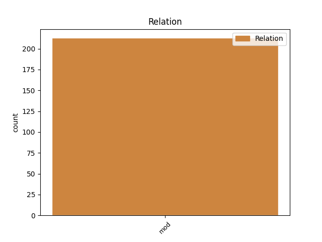
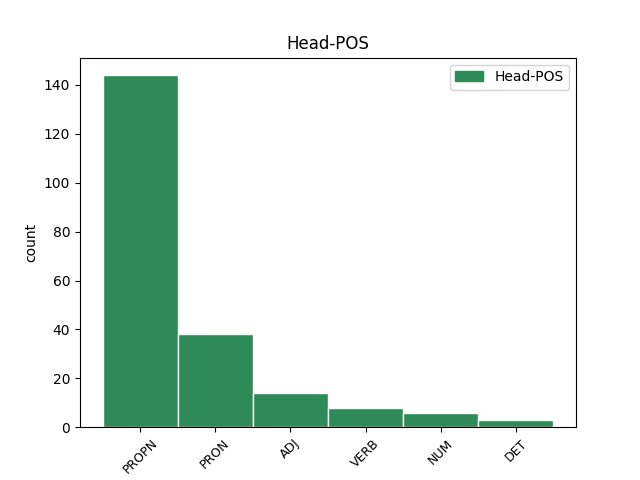

Distribution of features within this leaf



Agreement Rules sorted by frequency.
- When the dependent token is the modifer(mod) of the head token, and the head token is PROPN and the dependent token is NOUN.
1 Fiind _ _ _ _ 0 _ _ _
2 orînduit _ _ _ _ 0 _ _ _
3 de _ _ _ _ 0 _ _ _
4 am _ _ _ _ 0 _ _ _
5 protocolit _ _ _ _ 0 _ _ _
6 toate _ _ _ _ 0 _ _ _
7 acestea _ _ _ _ 0 _ _ _
8 Prăvili _ _ _ _ 0 _ _ _
9 după _ _ _ _ 0 _ _ _
10 izvoadele _ _ _ _ 0 _ _ _
11 ce _ _ _ _ 0 _ _ _
12 prin _ _ _ _ 0 _ _ _
13 sfat _ _ _ _ 0 _ _ _
14 de _ _ _ _ 0 _ _ _
15 obște _ _ _ _ 0 _ _ _
16 s _ _ _ _ 0 _ _ _
17 -au _ _ _ _ 0 _ _ _
18 alcătuit _ _ _ _ 0 _ _ _
19 și _ _ _ _ 0 _ _ _
20 găsindu _ _ _ _ 0 _ _ _
21 -le _ _ _ _ 0 _ _ _
22 întocmai _ _ _ _ 0 _ _ _
23 așezate _ _ _ _ 0 _ _ _
24 din _ _ _ _ 0 _ _ _
25 cuvînt _ _ _ _ 0 _ _ _
26 în _ _ _ _ 0 _ _ _
27 cuvînt _ _ _ _ 0 _ _ _
28 și _ _ _ _ 0 _ _ _
29 fără _ _ _ _ 0 _ _ _
30 cîtuși _ _ _ _ 0 _ _ _
31 de _ _ _ _ 0 _ _ _
32 puțină _ _ _ _ 0 _ _ _
33 schimbare _ _ _ _ 0 _ _ _
34 le- _ _ _ _ 0 _ _ _
35 am _ _ _ _ 0 _ _ _
36 adeverit _ _ _ _ 0 _ _ _
37 și _ _ _ _ 0 _ _ _
38 însum _ _ _ _ 0 _ _ _
39 cu _ _ _ _ 0 _ _ _
40 iscălitura _ _ _ _ 0 _ _ _
41 în _ _ _ _ 0 _ _ _
42 toate _ _ _ _ 0 _ _ _
43 foile _ _ _ _ 0 _ _ _
44 precum _ _ _ _ 0 _ _ _
45 să _ _ _ _ 0 _ _ _
46 văd _ _ _ _ 0 _ _ _
47 în _ _ _ _ 0 _ _ _
48 jos _ _ _ _ 0 _ _ _
49 punîndu _ _ _ _ 0 _ _ _
50 -să _ _ _ _ 0 _ _ _
51 și _ _ _ _ 0 _ _ _
52 Luminată _ _ _ _ 0 _ _ _
53 Peceatea pecete PROPN Npfsry Case=Acc,Nom|Definite=Def|Gender=Fem|Number=Sing 0 _ _ _
54 Mării mărie NOUN Ncfsoy Case=Dat,Gen|Definite=Def|Gender=Fem|Number=Sing 53 mod _ ref=ANAFORA.4
55 sale _ _ _ _ 0 _ _ _
56 la _ _ _ _ 0 _ _ _
57 fieștecare _ _ _ _ 0 _ _ _
58 foae _ _ _ _ 0 _ _ _
59 . _ _ _ _ 0 _ _ _
1 Într- _ _ _ _ 0 _ _ _
2 acestași _ _ _ _ 0 _ _ _
3 chip _ _ _ _ 0 _ _ _
4 și _ _ _ _ 0 _ _ _
5 la _ _ _ _ 0 _ _ _
6 Craiova _ _ _ _ 0 _ _ _
7 să _ _ _ _ 0 _ _ _
8 să _ _ _ _ 0 _ _ _
9 urmeaze _ _ _ _ 0 _ _ _
10 de _ _ _ _ 0 _ _ _
11 cătră _ _ _ _ 0 _ _ _
12 Dumnialui dumnealui PRON Pp3msr Case=Acc,Nom|Gender=Masc|Number=Sing|Person=3|PronType=Prs 0 _ _ _
13 Caimacanul caimacan NOUN Ncmsry Case=Acc,Nom|Definite=Def|Gender=Masc|Number=Sing 12 mod _ ref=PART_V_CAP_3.15e|SpaceAfter=No
14 . _ _ _ _ 0 _ _ _
1 Pentru _ _ _ _ 0 _ _ _
2 închiriere _ _ _ _ 0 _ _ _
3 pînă _ _ _ _ 0 _ _ _
4 la _ _ _ _ 0 _ _ _
5 șase _ _ _ _ 0 _ _ _
6 Luni _ _ _ _ 0 _ _ _
7 de _ _ _ _ 0 _ _ _
8 la _ _ _ _ 0 _ _ _
9 sfîrșitul sfârșit ADJ Afpmsry Case=Acc,Nom|Definite=Def|Degree=Pos|Gender=Masc|Number=Sing 0 _ _ _
10 sorocului soroc NOUN Ncmsoy Case=Dat,Gen|Definite=Def|Gender=Masc|Number=Sing 9 mod _ ref=PART_V_CAP_1.7g
11 închirierii _ _ _ _ 0 _ _ _
12 . _ _ _ _ 0 _ _ _
1 Pe- _ _ _ _ 0 _ _ _
2 un _ _ _ _ 0 _ _ _
3 șuvoi _ _ _ _ 0 _ _ _
4 de _ _ _ _ 0 _ _ _
5 ploae _ _ _ _ 0 _ _ _
6 Iată _ _ _ _ 0 _ _ _
7 vin _ _ _ _ 0 _ _ _
8 în _ _ _ _ 0 _ _ _
9 cale _ _ _ _ 0 _ _ _
10 O _ _ _ _ 0 _ _ _
11 turmă _ _ _ _ 0 _ _ _
12 de _ _ _ _ 0 _ _ _
13 mei _ _ _ _ 0 _ _ _
14 Cu _ _ _ _ 0 _ _ _
15 trei _ _ _ _ 0 _ _ _
16 ciobănei _ _ _ _ 0 _ _ _
17 : _ _ _ _ 0 _ _ _
18 Unu _ _ _ _ 0 _ _ _
19 vrâncian _ _ _ _ 0 _ _ _
20 , _ _ _ _ 0 _ _ _
21 Unu _ _ _ _ 0 _ _ _
22 ungurean _ _ _ _ 0 _ _ _
23 , _ _ _ _ 0 _ _ _
24 Unu unu NUM Mcmsrl Case=Acc,Nom|Gender=Masc|Number=Sing|NumForm=Word|NumType=Card 0 _ _ _
25 moldovan moldovan NOUN Ncmsrn Case=Acc,Nom|Definite=Ind|Gender=Masc|Number=Sing 24 mod _ Rhyme=22,ID19|SpaceAfter=No|Type=Mono
26 . _ _ _ _ 0 _ _ _
1 De _ _ _ _ 0 _ _ _
2 să _ _ _ _ 0 _ _ _
3 va _ _ _ _ 0 _ _ _
4 da _ _ _ _ 0 _ _ _
5 de _ _ _ _ 0 _ _ _
6 zestre _ _ _ _ 0 _ _ _
7 , _ _ _ _ 0 _ _ _
8 un _ _ _ _ 0 _ _ _
9 cîmp _ _ _ _ 0 _ _ _
10 , _ _ _ _ 0 _ _ _
11 cu _ _ _ _ 0 _ _ _
12 fînețe _ _ _ _ 0 _ _ _
13 , _ _ _ _ 0 _ _ _
14 și _ _ _ _ 0 _ _ _
15 cu _ _ _ _ 0 _ _ _
16 o _ _ _ _ 0 _ _ _
17 zidire _ _ _ _ 0 _ _ _
18 dărămată _ _ _ _ 0 _ _ _
19 netrebuincioasă _ _ _ _ 0 _ _ _
20 , _ _ _ _ 0 _ _ _
21 atunci _ _ _ _ 0 _ _ _
22 fînul _ _ _ _ 0 _ _ _
23 iaste _ _ _ _ 0 _ _ _
24 venit veni VERB Vmp--sm-p Gender=Masc|Number=Sing|Polarity=Pos|VerbForm=Part 0 _ _ _
25 al _ _ _ _ 0 _ _ _
26 bărbatului bărbat NOUN Ncmsoy Case=Dat,Gen|Definite=Def|Gender=Masc|Number=Sing 24 mod _ ref=PART_III_CAP_16b.11c|SpaceAfter=No
27 , _ _ _ _ 0 _ _ _
28 iară _ _ _ _ 0 _ _ _
29 de _ _ _ _ 0 _ _ _
30 să _ _ _ _ 0 _ _ _
31 va _ _ _ _ 0 _ _ _
32 vinde _ _ _ _ 0 _ _ _
33 materia _ _ _ _ 0 _ _ _
34 zidirii _ _ _ _ 0 _ _ _
35 cei _ _ _ _ 0 _ _ _
36 netrebuincioase _ _ _ _ 0 _ _ _
37 , _ _ _ _ 0 _ _ _
38 atunci _ _ _ _ 0 _ _ _
39 prețul _ _ _ _ 0 _ _ _
40 ei _ _ _ _ 0 _ _ _
41 îi _ _ _ _ 0 _ _ _
42 iaste _ _ _ _ 0 _ _ _
43 adaos _ _ _ _ 0 _ _ _
44 la _ _ _ _ 0 _ _ _
45 zestre _ _ _ _ 0 _ _ _
46 . _ _ _ _ 0 _ _ _
1 Şi _ _ _ _ 0 _ _ _
2 El _ _ _ _ 0 _ _ _
3 deade _ _ _ _ 0 _ _ _
4 pre _ _ _ _ 0 _ _ _
5 unii _ _ _ _ 0 _ _ _
6 apostolii _ _ _ _ 0 _ _ _
7 , _ _ _ _ 0 _ _ _
8 iară _ _ _ _ 0 _ _ _
9 pre _ _ _ _ 0 _ _ _
10 alții _ _ _ _ 0 _ _ _
11 proroci _ _ _ _ 0 _ _ _
12 , _ _ _ _ 0 _ _ _
13 iară _ _ _ _ 0 _ _ _
14 pre _ _ _ _ 0 _ _ _
15 alții _ _ _ _ 0 _ _ _
16 Evanghelisti _ _ _ _ 0 _ _ _
17 , _ _ _ _ 0 _ _ _
18 pre _ _ _ _ 0 _ _ _
19 alții altul DET Di3mpr Case=Acc,Nom|Gender=Masc|Number=Plur|Person=3|PronType=Ind 0 _ _ _
20 păstori păstor NOUN Ncmprn Case=Acc,Nom|Definite=Ind|Gender=Masc|Number=Plur 19 mod _ ref=PAVEL_EFES_4.11
21 și _ _ _ _ 0 _ _ _
22 învățători _ _ _ _ 0 _ _ _
23 . _ _ _ _ 0 _ _ _
Disagree Examples:
1 Iară _ _ _ _ 0 _ _ _
2 Iisus _ _ _ _ 0 _ _ _
3 numai _ _ _ _ 0 _ _ _
4 cît _ _ _ _ 0 _ _ _
5 auzind _ _ _ _ 0 _ _ _
6 acest _ _ _ _ 0 _ _ _
7 cuvînt _ _ _ _ 0 _ _ _
8 care _ _ _ _ 0 _ _ _
9 să _ _ _ _ 0 _ _ _
10 grăi _ _ _ _ 0 _ _ _
11 , _ _ _ _ 0 _ _ _
12 zise _ _ _ _ 0 _ _ _
13 mai _ _ _ _ 0 _ _ _
14 marelui mare ADJ Afpmsoy Case=Dat,Gen|Definite=Def|Degree=Pos|Gender=Masc|Number=Sing 0 _ _ _
15 sinagoghii sinagogă NOUN Ncfsoy Case=Dat,Gen|Definite=Def|Gender=Fem|Number=Sing 14 mod _ ref=MARC5.36|SpaceAfter=No
16 : _ _ _ _ 0 _ _ _
17 Nu _ _ _ _ 0 _ _ _
18 te _ _ _ _ 0 _ _ _
19 teame _ _ _ _ 0 _ _ _
20 , _ _ _ _ 0 _ _ _
21 ce _ _ _ _ 0 _ _ _
22 numai _ _ _ _ 0 _ _ _
23 creade _ _ _ _ 0 _ _ _
24 . _ _ _ _ 0 _ _ _
1 Iară _ _ _ _ 0 _ _ _
2 era _ _ _ _ 0 _ _ _
3 aproape _ _ _ _ 0 _ _ _
4 Paștile Paște PROPN Npfpry Case=Acc,Nom|Definite=Def|Gender=Fem|Number=Plur 0 _ _ _
5 jidovilor jidov NOUN Ncmpoy Case=Dat,Gen|Definite=Def|Gender=Masc|Number=Plur 4 mod _ ref=IOAN11.55
6 și _ _ _ _ 0 _ _ _
7 să _ _ _ _ 0 _ _ _
8 suiră _ _ _ _ 0 _ _ _
9 mulți _ _ _ _ 0 _ _ _
10 în _ _ _ _ 0 _ _ _
11 Ierosalim _ _ _ _ 0 _ _ _
12 , _ _ _ _ 0 _ _ _
13 dentr- _ _ _ _ 0 _ _ _
14 acel _ _ _ _ 0 _ _ _
15 ținut _ _ _ _ 0 _ _ _
16 , _ _ _ _ 0 _ _ _
17 înaintea _ _ _ _ 0 _ _ _
18 Paștelor _ _ _ _ 0 _ _ _
19 , _ _ _ _ 0 _ _ _
20 ca _ _ _ _ 0 _ _ _
21 să _ _ _ _ 0 _ _ _
22 să _ _ _ _ 0 _ _ _
23 curățească _ _ _ _ 0 _ _ _
24 pre _ _ _ _ 0 _ _ _
25 ei _ _ _ _ 0 _ _ _
26 . _ _ _ _ 0 _ _ _
1 După _ _ _ _ 0 _ _ _
2 aceaia _ _ _ _ 0 _ _ _
3 carele _ _ _ _ 0 _ _ _
4 fură _ _ _ _ 0 _ _ _
5 în _ _ _ _ 0 _ _ _
6 Samaria _ _ _ _ 0 _ _ _
7 , _ _ _ _ 0 _ _ _
8 cumu _ _ _ _ 0 _ _ _
9 -i _ _ _ _ 0 _ _ _
10 în _ _ _ _ 0 _ _ _
11 8 _ _ _ _ 0 _ _ _
12 capete _ _ _ _ 0 _ _ _
13 stih _ _ _ _ 0 _ _ _
14 4 _ _ _ _ 0 _ _ _
15 , _ _ _ _ 0 _ _ _
16 și _ _ _ _ 0 _ _ _
17 carele _ _ _ _ 0 _ _ _
18 făcură _ _ _ _ 0 _ _ _
19 în _ _ _ _ 0 _ _ _
20 Damasc _ _ _ _ 0 _ _ _
21 și _ _ _ _ 0 _ _ _
22 în _ _ _ _ 0 _ _ _
23 Lida _ _ _ _ 0 _ _ _
24 și _ _ _ _ 0 _ _ _
25 în _ _ _ _ 0 _ _ _
26 Iopiia _ _ _ _ 0 _ _ _
27 , _ _ _ _ 0 _ _ _
28 cap _ _ _ _ 0 _ _ _
29 9 _ _ _ _ 0 _ _ _
30 , _ _ _ _ 0 _ _ _
31 după _ _ _ _ 0 _ _ _
32 aceaia _ _ _ _ 0 _ _ _
33 în _ _ _ _ 0 _ _ _
34 Chesariia Cezareea PROPN Npfsry Case=Acc,Nom|Definite=Def|Gender=Fem|Number=Sing 0 _ _ _
35 , _ _ _ _ 0 _ _ _
36 cap cap NOUN Ncmsrn Case=Acc,Nom|Definite=Ind|Gender=Masc|Number=Sing 34 mod _ ref=ACTS.pred.4
37 10 _ _ _ _ 0 _ _ _
38 , _ _ _ _ 0 _ _ _
39 stih _ _ _ _ 0 _ _ _
40 11 _ _ _ _ 0 _ _ _
41 și _ _ _ _ 0 _ _ _
42 așijderea _ _ _ _ 0 _ _ _
43 în _ _ _ _ 0 _ _ _
44 Ierosalim _ _ _ _ 0 _ _ _
45 cap _ _ _ _ 0 _ _ _
46 12 _ _ _ _ 0 _ _ _
47 și _ _ _ _ 0 _ _ _
48 în _ _ _ _ 0 _ _ _
49 15 _ _ _ _ 0 _ _ _
50 . _ _ _ _ 0 _ _ _
1 Iară _ _ _ _ 0 _ _ _
2 botezîndu _ _ _ _ 0 _ _ _
3 -să _ _ _ _ 0 _ _ _
4 , _ _ _ _ 0 _ _ _
5 ia _ _ _ _ 0 _ _ _
6 și _ _ _ _ 0 _ _ _
7 casa _ _ _ _ 0 _ _ _
8 ei _ _ _ _ 0 _ _ _
9 , _ _ _ _ 0 _ _ _
10 rugă _ _ _ _ 0 _ _ _
11 noi _ _ _ _ 0 _ _ _
12 zicînd _ _ _ _ 0 _ _ _
13 : _ _ _ _ 0 _ _ _
14 De _ _ _ _ 0 _ _ _
15 gîndiți _ _ _ _ 0 _ _ _
16 că _ _ _ _ 0 _ _ _
17 -s _ _ _ _ 0 _ _ _
18 credincioasă credincioasă ADJ Afpfsrn Case=Acc,Nom|Definite=Ind|Degree=Pos|Gender=Fem|Number=Sing 0 _ _ _
19 Domnului domn NOUN Ncmsoy Case=Dat,Gen|Definite=Def|Gender=Masc|Number=Sing 18 mod _ ref=ACTS_16.15|SpaceAfter=No
20 , _ _ _ _ 0 _ _ _
21 întrați _ _ _ _ 0 _ _ _
22 în _ _ _ _ 0 _ _ _
23 casa _ _ _ _ 0 _ _ _
24 mea _ _ _ _ 0 _ _ _
25 de _ _ _ _ 0 _ _ _
26 mîneți _ _ _ _ 0 _ _ _
27 , _ _ _ _ 0 _ _ _
28 și _ _ _ _ 0 _ _ _
29 ne _ _ _ _ 0 _ _ _
30 sili _ _ _ _ 0 _ _ _
31 pre _ _ _ _ 0 _ _ _
32 noi _ _ _ _ 0 _ _ _
33 . _ _ _ _ 0 _ _ _
1 Şi _ _ _ _ 0 _ _ _
2 pogorînd _ _ _ _ 0 _ _ _
3 în _ _ _ _ 0 _ _ _
4 Chesariia _ _ _ _ 0 _ _ _
5 , _ _ _ _ 0 _ _ _
6 sui _ _ _ _ 0 _ _ _
7 în _ _ _ _ 0 _ _ _
8 Ierosalim _ _ _ _ 0 _ _ _
9 și _ _ _ _ 0 _ _ _
10 să _ _ _ _ 0 _ _ _
11 închină _ _ _ _ 0 _ _ _
12 adunăriei adunare PROPN Npfsoy Case=Dat,Gen|Definite=Def|Gender=Fem|Number=Sing 0 _ _ _
13 credincioșilor credincios NOUN Ncmpoy Case=Dat,Gen|Definite=Def|Gender=Masc|Number=Plur 12 mod _ ref=ACTS_18.22|SpaceAfter=No
14 , _ _ _ _ 0 _ _ _
15 pogorî _ _ _ _ 0 _ _ _
16 întru _ _ _ _ 0 _ _ _
17 Antichiia _ _ _ _ 0 _ _ _
18 . _ _ _ _ 0 _ _ _